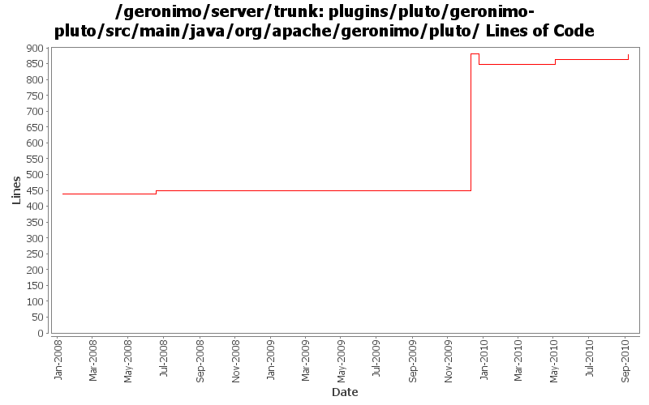

[root]/plugins/pluto/geronimo-pluto/src/main/java/org/apache/geronimo/pluto
 impl
(3 files, 273 lines)
impl
(3 files, 273 lines)

| Author | Changes | Lines of Code | Lines per Change |
|---|---|---|---|
| Totals | 24 (100.0%) | 529 (100.0%) | 22.0 |
| djencks | 15 (62.5%) | 478 (90.4%) | 31.8 |
| gawor | 4 (16.7%) | 26 (4.9%) | 6.5 |
| genspring | 1 (4.2%) | 21 (4.0%) | 21.0 |
| jdillon | 4 (16.7%) | 4 (0.8%) | 1.0 |
GERONIMO-5516 Add isAdvanced properties to AdminConsoleExtensionGBean. Patch from janel with modifications.
21 lines of code changed in 1 file:
wait for PortalContainerServices gbean to be initialized (since it is initialized via blueprint)
17 lines of code changed in 3 files:
XBEAN-148 use new xbean-bundleutils
1 lines of code changed in 1 file:
GERONIMO-4965 update to DI changes in pluto
33 lines of code changed in 1 file:
GERONIMO-4965 Get pluto 2 running as osgi blueprint service. Base console sort of works. Fix a bug in jetty single-bundle-ear support for locating resources
432 lines of code changed in 5 files:
fix problem in EarConfigBuilder when constructing sub-configurations for wars. Rename DeploymentContext.getBundle to getDependencyBundle to try to make it clearer that it is temporary and not always available. Start updating pluto/console stuff for pluto 2.
10 lines of code changed in 3 files:
GERONIMO-4708 Use released pluto version, implement icon handling in geronimo code. Also put pluto dependency management into pluto plugin. Also delete some now unused repository entries
2 lines of code changed in 1 file:
console icons are back (GERONIMO-3562)
9 lines of code changed in 1 file:
More loggers back to static
1 lines of code changed in 1 file:
(GERONIMO-3985) Use SLF4J as the primary logging facade for Geronimo
3 lines of code changed in 3 files:
GERONIMO-3745 clean up AdminConsoleExtensionGBean
0 lines of code changed in 4 files: